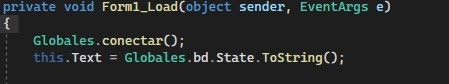
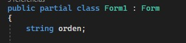
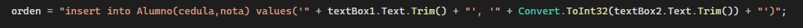
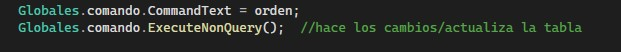

guia de C# con Access
el primer paso es verificar que el formulario donde estemos trabajando este conectado a la base de datos, señalando el formulario principal (llamada 'GLOBALES' en este ejemplo) , junto con la funcion que debimos ya haber programado par conectar (llamada 'conectar' en este ejemplo).
luego declaramos una variable de tipo string de bajo de la clase publica de nuestro formulario, que sera donde almacenaremos la orden que queremos darle a la base de datos
luego le damos valor a la variable que sera la orden a la base de datos, la cadena seria 'insert into "nombre de la tabla(campos de la tabla)"+value("datos para agregar");''
por ultimo ultimo ejecutamos los comandos dentro de la variable con la orden para la base de datos, esto señalando el formulario donde se ubica la conexion a la base seguido del comando ya creado para comunicarse con la base.
nota: recuerde hacerlo dentro del proceso done quiere que se realice la orden .